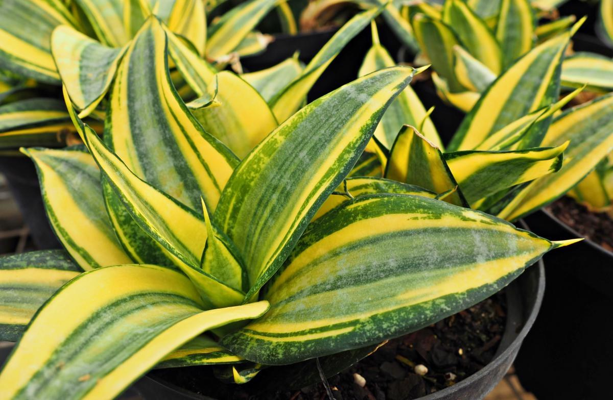
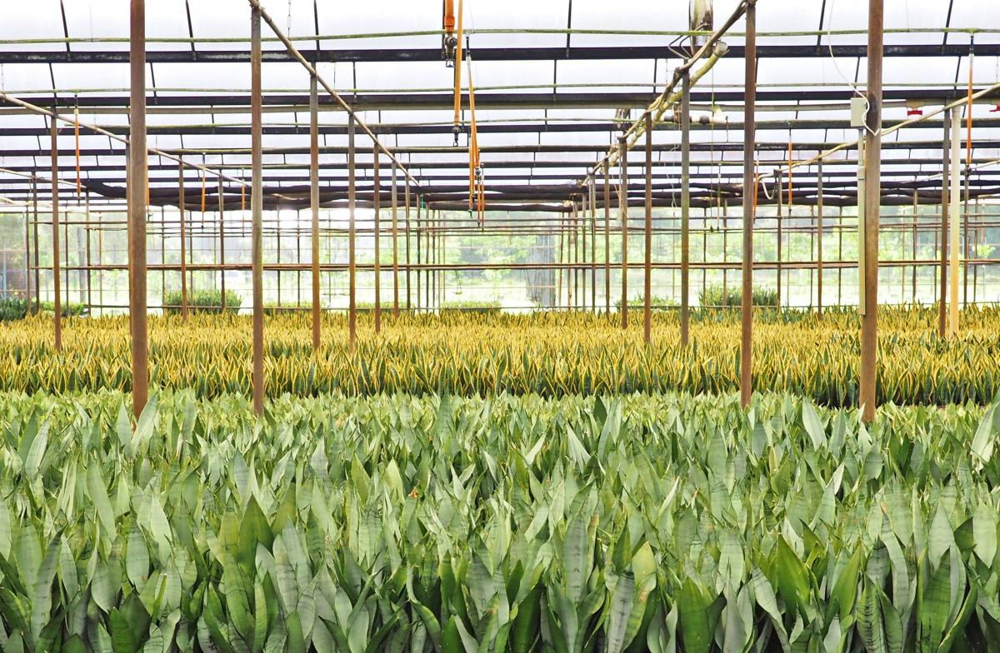

01 / FoliageBy the greenhouse
Sansevieria
Snake plants in seven named kinds, from compact bird's nest forms to tall laurentii.
- HahniiCompact
- Golden hahniiCompact
- Hahnii ‘Hunny Bunny’Compact
- JadeCompact
- LaurentiiUpright
- Moonshine laurentiiUpright
- ZeylanicaUpright